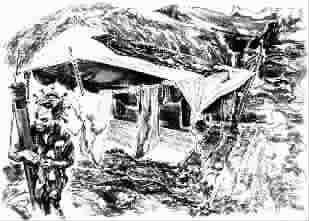

独自等待
●廖 恒
在非洲的斯威士兰，我工作的医院坐落在漂亮、陡峭的莱邦博山的顶峰。在这里，人们为了看病，常常得走40公里或更远。
每天早晨，医护人员搭上一辆小卡车或大篷运货车，到那些极度贫困且急需医疗服务的社区为人看病。每次出发前，我都会买一些土豆、胡萝卜和苹果，送给我们遇到的人。在非洲，医疗服务不仅意味着提供药物，也意味着提供食物。我常常会准备好一袋糖果，分发给在社区里遇到的那些可爱的孩子们。
那天，我们来到一个孤儿家中。在斯威士兰，这样的家庭有15000多家。在那个用木头搭成的棚里，我们发现了一个漂亮的小女孩，她有着一双又大又亮的灰褐色的眼睛。她的名字叫坦兹尔。我从袋子里拿出一颗糖给她，她用当地的方言对我说了一句话：“医生，能再给我一颗吗？我要给我的妹妹。”同去的护士为我做了翻译。“当然可以。”我又给了她一颗。为一个肺结核患者做完治疗后，我们按原路返回，经过坦兹尔家的门前，我们向她说再见。让我们奇怪的是，坦兹尔没有吃我给她的第二颗糖，而是把它留着。护士说：“这小女孩真聪明，她为自己要了两颗糖。”接着她又问了坦兹尔几个问题，我们都被深深地打动了。
坦兹尔今年7岁。两年前，她的父母像这个国家的很多人一样，双双死于艾滋病。父母的去世带给坦兹尔无尽的伤痛，可是，灾难常常结伴而行。父母离她而去的当年，坦兹尔与自己的妹妹失散，当时她的妹妹才3岁。此后，不管谁给坦兹尔任何东西，如果不是给她两份，她都不会接受。两个胡萝卜、两个布娃娃、两颗糖，一个给她自己，一个留给很可能已不在人世的妹妹。事实上，在坦兹尔居住的小木棚里，我们看到了她收集的一堆旧东西。她希望有一天，她能把这些东西都给她的妹妹。
我的一些朋友曾对我说，当他们看着非洲的这些孩子时，不知为什么，总会觉得这些孩子与我们的孩子不同，他们好像感觉不到痛，同样也感受不到爱。我也一直有相同的看法。但认识了坦兹尔后，我的看法完全改变了。现在我坚信，这些孩子的痛深，爱更深。
在回来的路上，我一直被坦兹尔的故事深深地震撼着。回到住所后，一些同事告诉我，在斯威士兰像坦兹尔这样的孩子还有很多，他们都在各自等待着他们生命中同样重要的人。有的是父母，有的是兄弟姐妹，有的是祖父母。这些孩子都已经很长时间未与他们相见。虽然这种独自等待是一种煎熬，但我仍然相信，在这种等待中，孩子们都不是孤单的，因为有同一样东西一直陪伴着他们，那就是每个孩子居住的小木棚里放着的、他们一直收集的、准备有一天给自己亲人的一堆或大或小的旧东西。
我想起了一首古老民歌里的一句歌词：“当我们饥饿时，爱能让我们活下来。”我祈祷上天，这句歌词能在坦兹尔，以及其他很多像坦兹尔一样的小孩子的身上实现。
(许琳珊摘自《百花意友》2006年第10期，冯煌图)